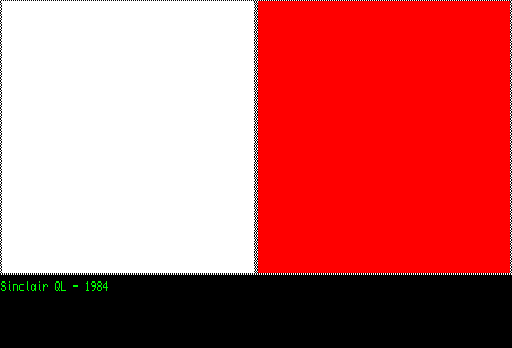

Sinclair QL
The Sinclair QL (for Quantum Leap) was launched by Sinclair Research in 1984, as an upper-end counterpart to the Sinclair ZX Spectrum. The QL was aimed at the serious home user and professional and executive users markets from small to medium-sized businesses and higher educational establishments.

It was originally conceived in 1981 under the code-name ZX83, as a portable computer for business users, with a built-in ultra-thin flat-screen CRT display, printer and modem. As development progressed it became clear that the portability features were over-ambitious and the specification was reduced to a conventional desktop configuration. It failed to achieve commercial success.
Based on a Motorola 68008 processor clocked at 7.5 MHz, the QL included 128 KB of RAM, which was officially expandable to 640 KB and in practice, 896 KB. It could be connected to a monitor or TV for display. Two built-in Microdrive tape-loop cartridge drives provided mass storage, in place of the more expensive floppy disk drives found on similar systems of the era. Microdrives had been introduced for the ZX Spectrum in July 1983, although the QL used a different logical tape format. Interfaces included an expansion slot, ROM cartridge socket, dual RS-232 ports, proprietary QLAN local area network ports, dual joystick ports and an external Microdrive bus. Two video modes were available, 256×256 pixels with 8 RGB colors and per-pixel flashing, or 512×256 pixels with four colors: black, red, green and white.